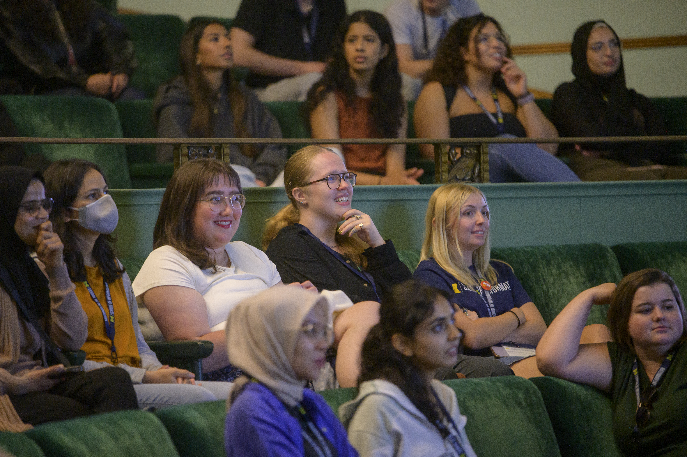

Communicate with Your Partner
Begin the working relationship with clear and professional communication. Introduce your team, explain the purpose of your outreach, and establish how and when you will communicate throughout the project.

Turn your project ideas into a structured working relationship. As your experience begins, focus on communicating professionally, establishing shared expectations, and building trust with your project partner.

First impressions can shape the direction of an engaged learning partnership. Early conversations give your team and partner an opportunity to clarify expectations, discuss the project scope, and establish how you will work together.
Starting with clear communication and shared agreements can help your team navigate uncertainty and develop a professional, respectful relationship with your partner throughout the project.
Begin the working relationship with clear and professional communication. Introduce your team, explain the purpose of your outreach, and establish how and when you will communicate throughout the project.
Use your first meeting to learn more about your partner and establish a shared understanding of the project. Prepare an agenda, ask questions about needs and constraints, and clarify the roles of students and partners.
Document important decisions after your initial conversations. Make sure your team and partner share an understanding of the project scope, responsibilities, communication expectations, milestones, and intended outcomes.